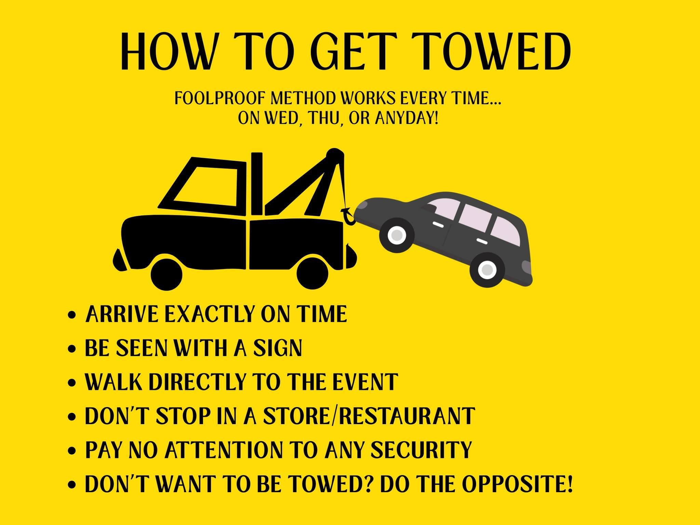

Parking
For the Patriot's day Justice Rally on April 20 you can park at Simonds Park, 10 Bedford St, Burlington. Rides are available to 1000 Distract Ave from 10-12. Look for a volunteer in yellow or orange vest. They will identify a volunteer driver to take you to 1000 District Ave and drive you back to your car from 12:15 to 1:15.
Quick Summary
- 🚗 For details about being shuttled from Simonds park see above.
- 🚗 Public parking is available at TRW Playground (Stony Brook Rd).
- ⚠️ Commercial lots carry a risk of towing. Discretion advised. You can drop off your signs or whatever else at 1000 District Ave.
- ✅ Temple Shalom Emeth and United Church of Christ have granted permission to park there on Patriots Day April 20. Wednesday, unless there is a conflicting event.
- ✅ Temple Shalom Emeth and United Church of Christ have also granted permission to park on Wednesday, unless there is a conflicting event.
- 🚗 Wed there is a shuttle from a designated parking location. Check with the respective facebook pages or website.
For the Patriot’s day Justice Rally you can park at Simonds Park, 10 Bedford St, Bedford. Volunteers will be available to drive you to 1000 District Ave from 10-12 and drive you back to your car from 12:15 to 1:15.
📍 Public & Approved Parking
Wednesday Shuttle locations
Bearing Witness/Wednesday: organized carpool. Find carpooling info in the parking section of The Standout page for info on carpooling.
TRW Playground (Public Lot)
Address: 28 Stony Brook Rd, Burlington, MA
Approximately 0.8 miles from District Ave (30+ spaces available).
Note: If you enter "TRW Playground" into navigation, some map apps may suggest an illegal turn. It is best to navigate directly to 28 Stony Brook Rd.
⚠️ Commercial Lots
What Not To Do

Sign Drop Off
Organizers have a lot of signs, so you do not need to bring your own sign. If bringing your own sign, you can drop it off before parking:
- Mon-Fri: 1000 District Ave
- Sat: Corner of District Ave & Burlington Mall Road
- Do not leave signs unattended if no one is present.
Kohl’s
Many participants have parked here without issue.
No towing has been reported from this location. Kohl’s has not put up signs saying you will be towed.
Strip Mall (Just Salad Plaza)
"No Parking" signs have been posted. No towing has been reported as of March 23.
Burlington Mall
Some participants have reported being questioned even when not near their vehicles.
No towing has been reported as of March 23.
District Ave (Including Street Parking)
Towing has occurred in this area, including from street parking.
Retrieval costs have been approximately $180. Do not assume if you see no security patrol you are safe.